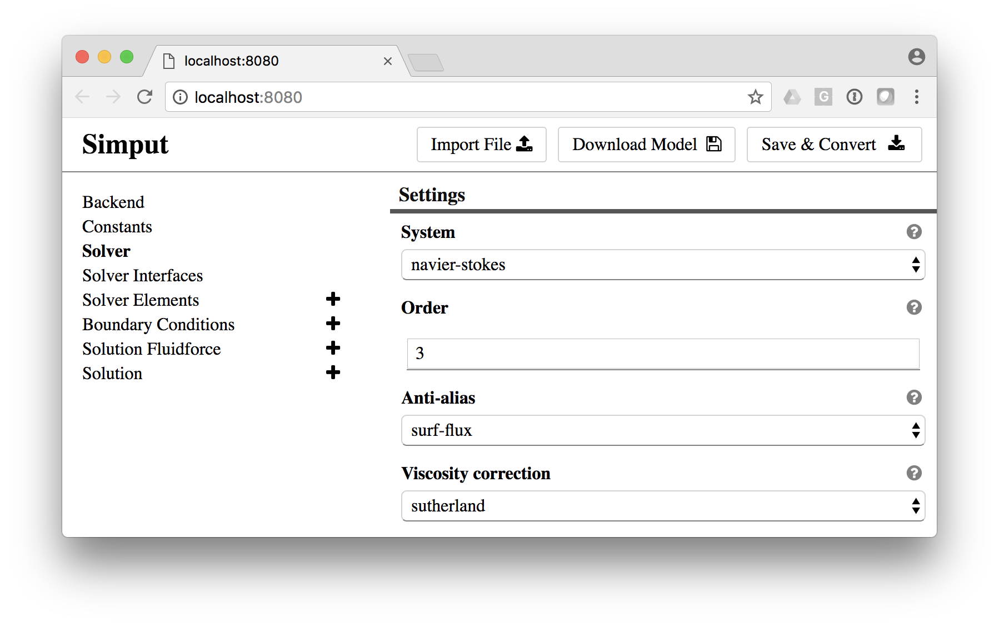

Simput is a tool for simplifying the process of writing and editing simulation input files.
It can be used as standalone tool or within other platform such as HPCCloud to streamlining input definition.
What is SimPut?
SimPut allow you to specify your a data model that will allow to generate UI for users to fill forms that will then be turned into a serie of text files.
The main usage that we have with Simput is to create Input-deck for simulation code while providing an interactive user interface with contextual documentation.
Usage
$ Simput |
Let’s open a specific model locally for edition
$ Simput -o /tmp -i types/pyfr/samples/empty/pyfr-empty-externals.json |

Concept

Components
In order to create a new input type for SimPut you will need:
- model.json / model.js: describe what kind of input are needed from the user and how those input should be layout via views.
- convert.js [optional]: provide a path to validate and restructure the view data model into another one easier for template engine and create a target file map (file path / content).
- templates/*.hbs [optional]: Template files to use inside convert.js to actually do the conversion into a file format.
- lang/en/
- label.json [optional]: Label to use for a specific langage such as
en:english - help/{Attribute Name}/{Parameter Id} [optional]: Extended HTML snippet used for togglable help panel
- label.json [optional]: Label to use for a specific langage such as